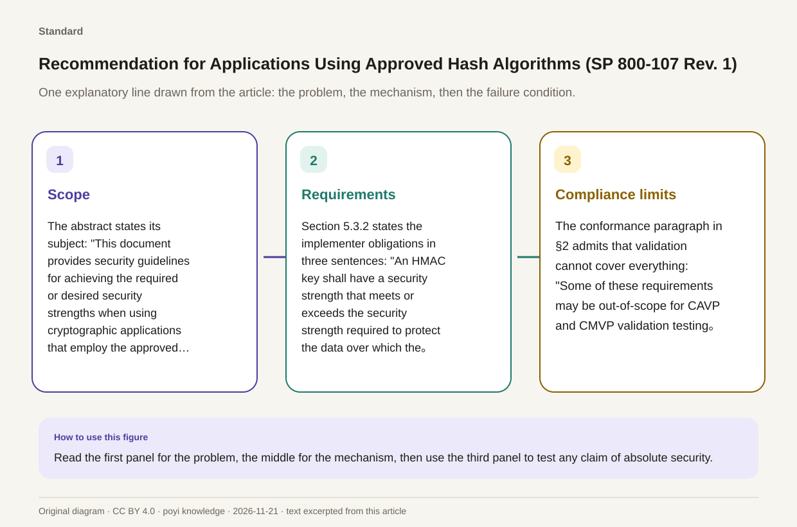
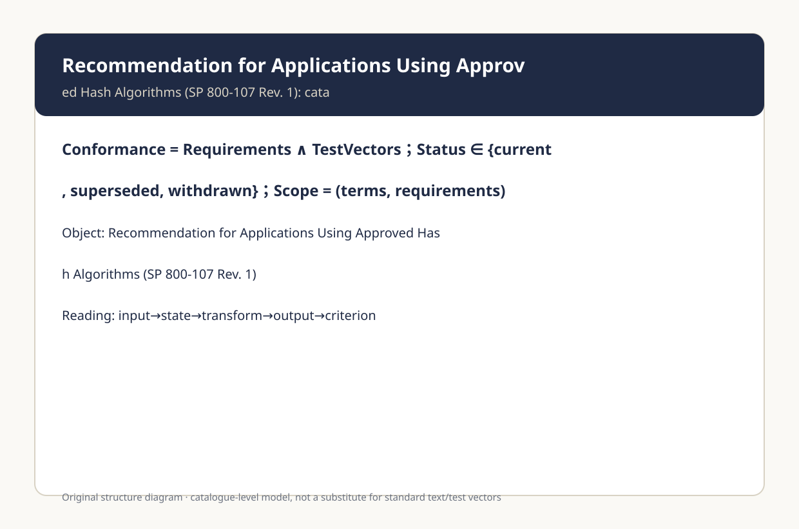

Principles
Standard: Recommendation for Applications Using Approved Hash Algorithms (SP 800-107 Rev. 1) (批准哈希算法的使用建议（SP 800-107）). The abstract states its subject: "This document provides security guidelines for achieving the required or desired security strengths when using cryptographic applications that employ the approved hash functions specified in Federal Information Processing Standard (FIPS) 180-4." The affected uses follow at once: "These include functions such as digital signatures, Keyed-hash Message Authentication Codes (HMACs) and Hash-based Key Derivation Functions (Hash-based KDFs)." It governs strength matching, not the hash algorithms themselves. The quoted object is strength rather than the algorithms: the functions are designated by FIPS 180-4, and this document deals with how the listed applications reach the strength they require.

Why it matters
The starting point is the basic step: "A hash algorithm is used to map a message of arbitrary length to a fixed-length message digest." The risk is an illusion of strength, and §4.2 gives the rule of thumb: "the expected collision resistance strength of any approved hash function is, in general, half the length of its hash value." It then records the exception that has already fallen: "The latest cryptanalytic results for SHA-1 [SHA1 Attack] indicate that it may have a collision resistance strength that is considerably less than its expected strength of 80 bits." The three sentences form the argument: compressing an arbitrary message to a fixed digest is not the problem, treating digest length as strength is. The rule of thumb is collision resistance at half the digest length, and the document hedgingly reports that SHA-1 "may have" a collision resistance considerably below its expected 80 bits — it does not state that as a settled fact.
Applications
Section 5.3.2 states the implementer obligations in three sentences: "An HMAC key shall have a security strength that meets or exceeds the security strength required to protect the data over which the HMAC is computed." "The HMAC key shall be kept secret." and "HMAC keys shall be generated as specified in SP 800-133 [SP 800-133]." All three are shall-level: the strength must match the protected data, the key must stay secret, and key generation is handed to another document rather than specified here.

Limits & attacks
The conformance paragraph in §2 admits that validation cannot cover everything: "Some of these requirements may be out-of-scope for CAVP and CMVP validation testing, and thus are the responsibility of entities using, implementing, installing, or configuring applications that incorporate this Recommendation." Section 1 also excludes two key-derivation documents: "these documents sufficiently address the security aspects of their use, so discussions of SP 800-56C and SP 800-108 are not included herein." And §5.2 places a dated restriction on SHA-1: "SHA-1 shall not be used in any new digital signature applications that require at least 80 bits of security strength." The three limits operate at different levels: requirements validation cannot reach become the responsibility of those who deploy and configure them, two key-derivation documents are excluded from discussion, and the SHA-1 prohibition is keyed to the use and the strength threshold.
History
Its own masthead makes this copy "NIST Special Publication 800-107" Revision 1, titled "Recommendation for Applications Using Approved Hash Algorithms", with the author and division lines reading in sequence as "Quynh Dang Computer Security Division Information Technology Laboratory"; continuing line by line through the title block gives "Information Technology Laboratory COMPUTER SECURITY August 2012", so this copy is dated August 2012 and contains no DOI line. The acknowledgements name the single author and the reviewers: "The author, Quynh Dang of the National Institute of Standards and Technology (NIST) gratefully appreciates the contributions and comments from Elaine Barker, William E. Burr, Shu-jen Chang, Lily Chen, Donna F. Dodson, Morris Dworkin, John Kelsey, Ray Perlner, W. Timothy Polk and Andrew Regenscheid." Appendix B gives the first edition date and one revision item: "The original version of this document was published in February 2009." and "Adding and addressing the security properties of SHA-512/224 and SHA-512/256."
Worked example & verification
Formal model and reproduction steps
[S=\min_i S_i,\quad S_i\in{\text{密钥强度},\text{分组安全},\text{实现安全}}]
Recommendation for Applications Using Approved Hash Algorithms (SP 800-107 Rev. 1): the registered public parameters, key material or randomness, and message are mapped through the stated transformation to an output checked against the registered criterion. The worked example is a structural reproduction, not a new test vector; parameter ranges, standard versions and implementation details remain source-bound.
References
- Wikipedia search entry for 批准哈希算法的使用建议（SP 800-107）. https://zh.wikipedia.org/w/index.php?search=%E6%89%B9%E5%87%86%E5%93%88%E5%B8%8C%E7%AE%97%E6%B3%95%E7%9A%84%E4%BD%BF%E7%94%A8%E5%BB%BA%E8%AE%AE%EF%BC%88SP%20800-107%EF%BC%89
- Handbook of Applied Cryptography (Menezes, van Oorschot, Vanstone). https://www.cacr.math.uwaterloo.ca/hac/